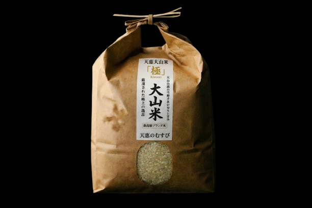

大山の至宝
豊かな土壌と清らかな水、そして人の手が生み出す
大山県が世界に誇る名産品の数々。

RICE / 特選米
天恵大山米「極」
大山山脈から流れ出すミネラル豊富な雪解け水で育てられた最高級ブランド米。粘り、甘み、香りの三拍子が揃い、炊きあがりの輝きはまさに「天の恵み」と称されています。
OYAMA BEEF IMAGE
BEEF / 和牛
大山翡翠和牛
厳選された飼料とストレスのない環境で育てられた「大山翡翠和牛」。きめ細やかなサシと、口の中でとろけるような脂の甘みが特徴です。数々の品評会で金賞を受賞した逸品です。
TRADITION IMAGE
CRAFT / 伝統工芸
大山手漉き和紙
八百年の歴史を持つ大山和紙。強靭でありながら、肌触りはどこまでも柔らかく。職人が一枚一枚丁寧に漉き上げる和紙は、国内外のアーティストからも高い評価を得ています。